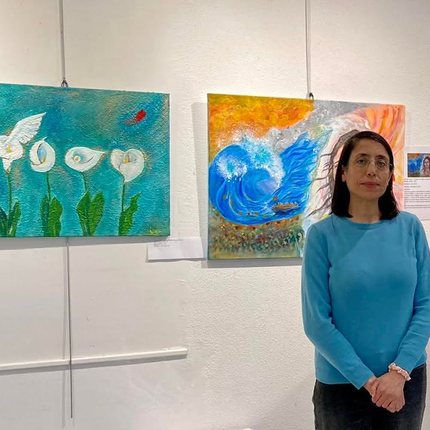

Zainab Khallouf, Ph.D.
Lecturer in Computer Science & Cybersecurity
ENSIBS, Université Bretagne Sud · Vannes, France

ZKLecturer in Computer Science & Cybersecurity
ENSIBS, Université Bretagne Sud · Vannes, France
With over 20 years of experience in academic teaching, I have developed a deep belief in the transformative power of education. I am currently seeking a permanent academic teaching and research position that aligns with my skills, experience, and long-term aspirations. Since 15 Nov 2021, I'm a lecturer-researcher (CDD-LRU) at Université Bretagne Sud (UBS) and before that, I was a lecturer at the Faculty of Informatics Engineering-Homs-Syria from fall 2006 to oct 2021. My teaching portfolio includes a broad range of courses such as blockchain, component-based software engineering, computer networks security, E-commerce systems, distributed systems, and computer ethics. I hold a Ph.D. in Informatics from Grenoble Institute of Technology (INPG), France, with dissertation entitled: "Multicast Routing Infrastructure Security: The Network Operator's Point of View", supported by a CIFRE scholarship. My research expertise bridges academia and industry, having collaborated with France Telecom R&D and INRIA Grenoble. Prior to that, I received a Master's Degree: DEA ISC (Diplôme d'Etudes Approfondies en "Informatique : Systèmes et Communications") with dissertation entitled: "A Study of High Speed Forward Error Correction (FEC) Codes for the Reliable Multicast Delivery of Bulk Data" in 2002 and Postgraduate Diploma in Computer Science: DESS-CCI (Diplôme d'Etudes Supérieures Spécialisées Compétence Complémentaire en Informatique) in 2001 from Joseph Fourier University, Grenoble, France. My initial training was in Syria at Al-Baath university (Homs city) where I received my bachelor's degree in mathematics specializing in Computer Science in 1997, and Postgraduate Diploma in Computer Science in 1999. Because I graduated as the top of my class with an average grade of 80.2/100, I was appointed as a demonstrator in the university and I was later awarded a scholarship from the ministry of higher education-Syria, allowing me to continue my higher studies in France.